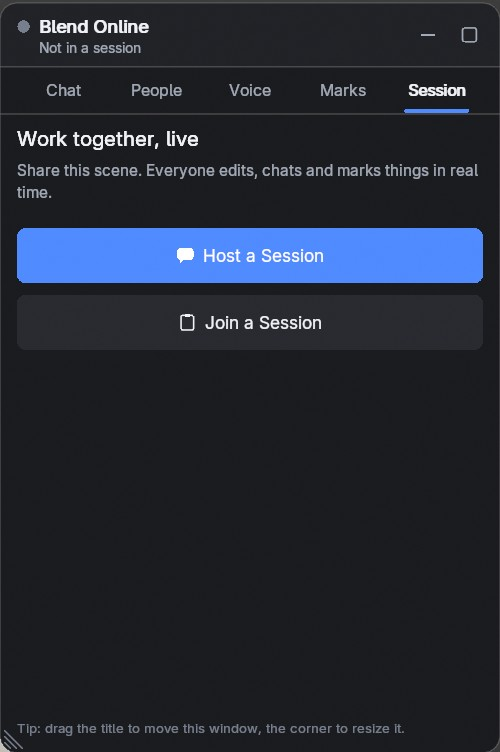
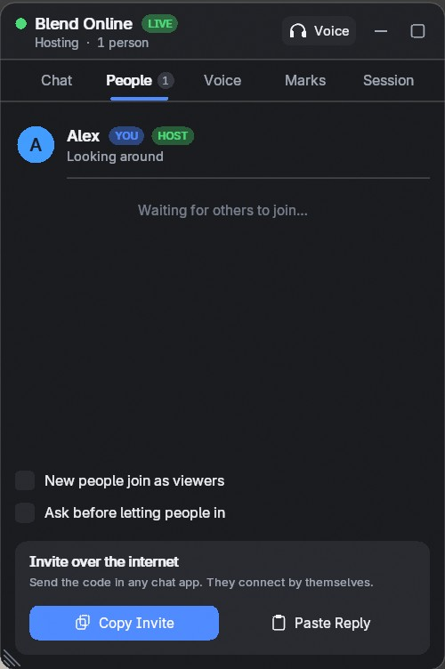
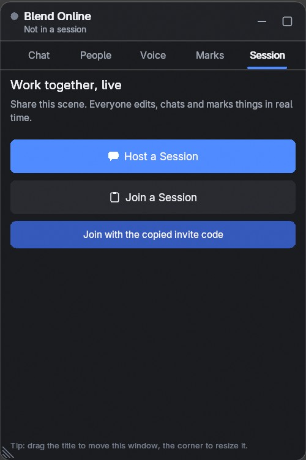

Two artists. One scene. Live.
Edit the same Blender scene with someone else at the same time, over the internet. Send one invite code, then model, shade and animate together, and talk while you do it, without leaving Blender.
Host a session, copy the invite and send it in any chat app. The other person pastes it and joins. There is no server to set up and no port to forward.



Invite code connections are direct and encrypted, and work through most home and office routers. When both sides are behind a strict (symmetric) NAT, use the included relay server script or a VPN. More in the docs.
Move, rotate, scale, add, duplicate, delete: everyone sees it right away. You always know where the others are.
You don't have to leave Edit Mode for the others to see your work. The mesh is shared after every operation.
Whole node trees stay in sync, not just their results. Change a value on your side and the other person's viewport follows.
Add, delete, duplicate, rename, parent, hide, move between collections. Meshes, curves, text, empties, lights, cameras.
Geometry and UVs, live even inside Edit Mode and Sculpt Mode.
Bezier, NURBS, poly and text objects with their settings.
Whole node trees, color ramps and shader node groups.
Image files travel with the scene, in the background, so large ones don't hold up your edits.
World nodes, render engine, resolution, frame range, color management and samples.
Every modifier type, with settings and Geometry Nodes inputs.
Constraint settings and targets, nested collections and their flags.
Keyframes, interpolation, F-Curve modifiers and timeline markers. See everyone's current frame on the timeline.
Voice chat is built in. No third app, no extra call. Green rings and level bars show who is talking.
Voice chat runs on Windows and Linux. It is not available on macOS, because Blender has no microphone permission there.
Viewers can look, chat, talk and mark, but they can't change the scene. Change anyone's role at any time.
Turn it on and each person waits until you let them in. Remove people from the session when you need to.
The shared scene opens as a new scene in your file. Your other scenes are not changed.
So you know before you buy:
Read the documentation for every feature and setting.